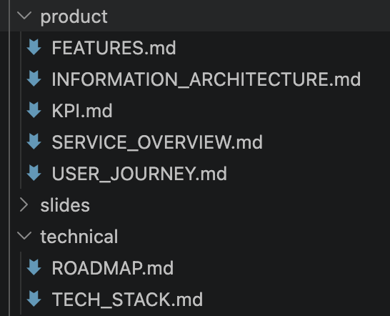

SECTION 02 — 기획
11 / 27

SPEC.md
타겟 · 비전 · 기능 · 기술스택 · 개발 단계 · Phase 1-3 로드맵을 한 문서에 정리
implementation.md
Task 1~15 단계별 구현 계획. Claude에게 직접 넘겨 실행시키는 플랜 문서
핵심 원칙
문서가 완성되면 Claude는 그걸 그대로 실행합니다. 기획자 = 프롬프트 엔지니어